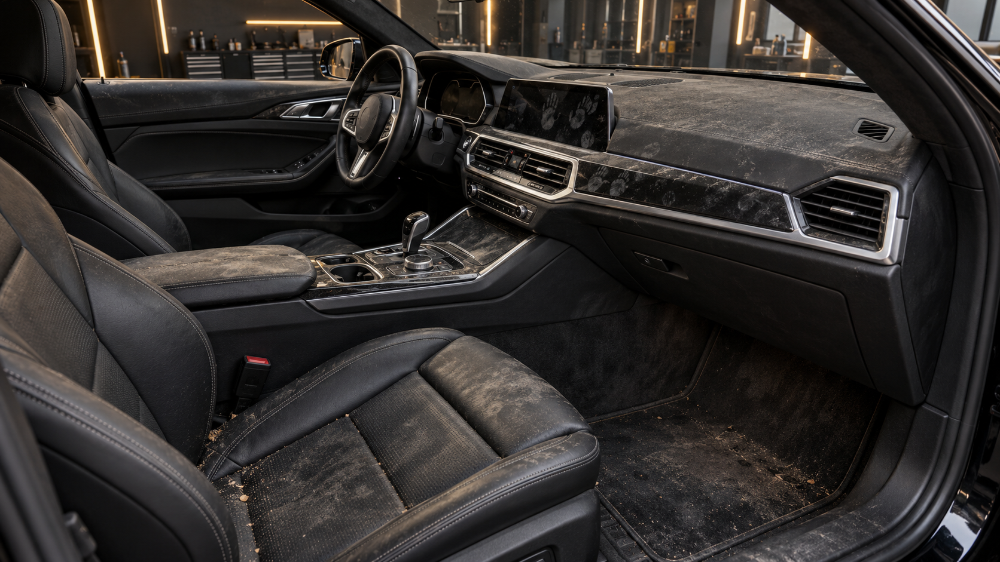
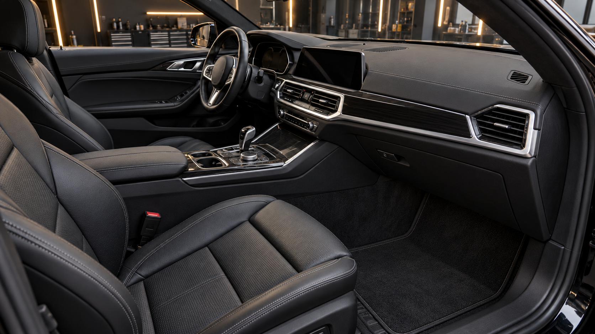

Slow work. Straight answers.
JD Auto is a detailing studio for people who would rather know what was done to their car than be told it is "sorted". We take our time, and we write down what we find.
Precision in Every Detail.
The order of work
Every car goes through the same five stages. Skipping one is how a good polish ends up on a dirty panel.
- We inspect. Before any water touches the car, we walk it under hard light and note what is there: swirls, etching, stone chips, worn trim. You get the list in plain words.
- We wash and decontaminate. Hand wash, then iron remover and clay. Paint should feel like glass before it is polished, otherwise we are grinding dirt into it.
- We correct. A test panel first. We use the lightest pad and polish that gets the result, because clear coat only has so much to give.
- We protect. Wax, sealant or ceramic coating, chosen for how the car is driven and parked, not for what costs more.
- We hand it over. We walk around the car with you, show what changed and what did not, and explain how to wash it so it stays that way.


Same seat, same light, same camera. The only thing that changes is the work.AI-generated illustration, not a customer vehicle.
What we won't do
- Promise every scratch will disappear.
Deep ones need paint, not polish.
- Polish through the clear coat for a perfect look.
We measure, and we stop when there is nothing safe left to take.
- Sell a coating to a car that needs a good wash.
If that is all it needs, that is what we will say.
- Rush a car to fill the schedule.
Fewer cars a day is the whole point.
Got a car in mind?
Photo credits
Photographs on this site come from Unsplash and Pexels. Thank you to the photographers.
- Hero photographOsley Coke on Unsplash
- Closing photograph4k wallpaper on Unsplash
- Paint CorrectionNeelabh Raj on Unsplash
- Interior DetailingMuhammad Saad on Unsplash
- Exterior DetailingMathias Reding on Pexels
- Gallery
- Vitali Adutskevich on Unsplash
- Clarence Tioh on Unsplash
- Tuomas Nylund on Unsplash
- Timur Gibadullin on Unsplash
- Samuele Errico Piccarini on Unsplash
- Angelica Levshakowa on Unsplash
- J Z on Unsplash
- Kevin Bhagat on Unsplash
- Cole McKee on Unsplash